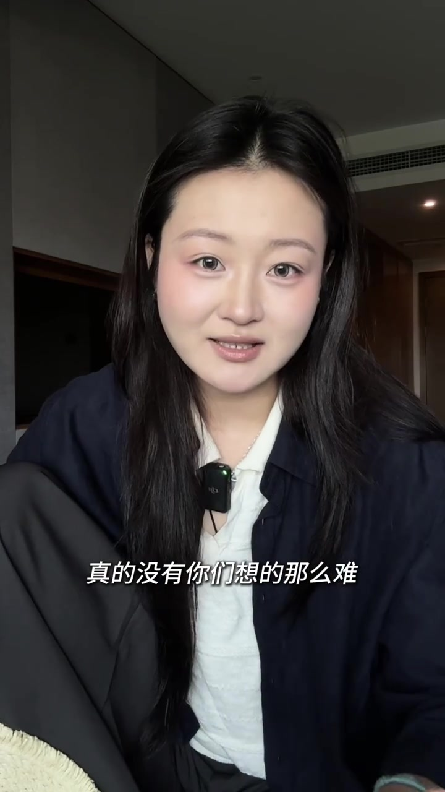
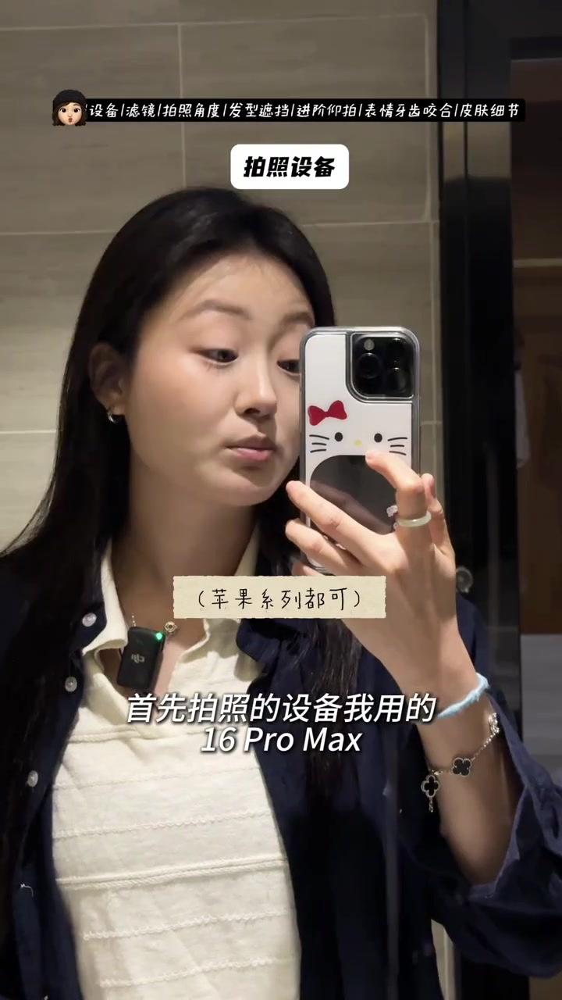
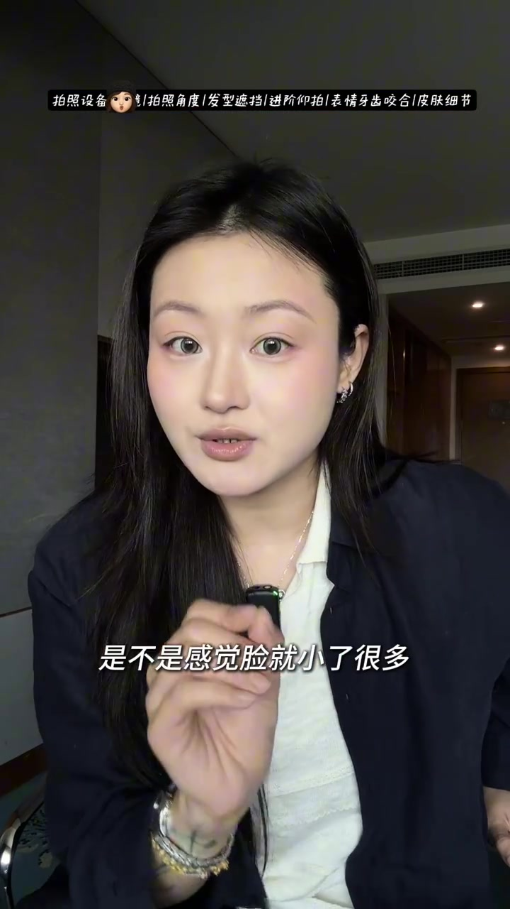
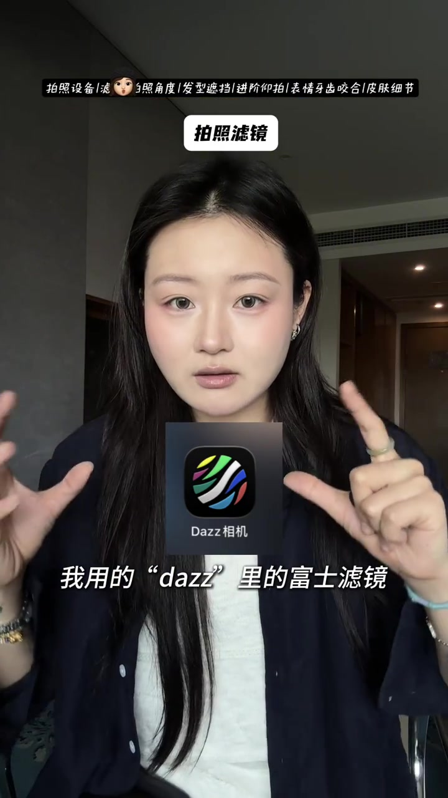
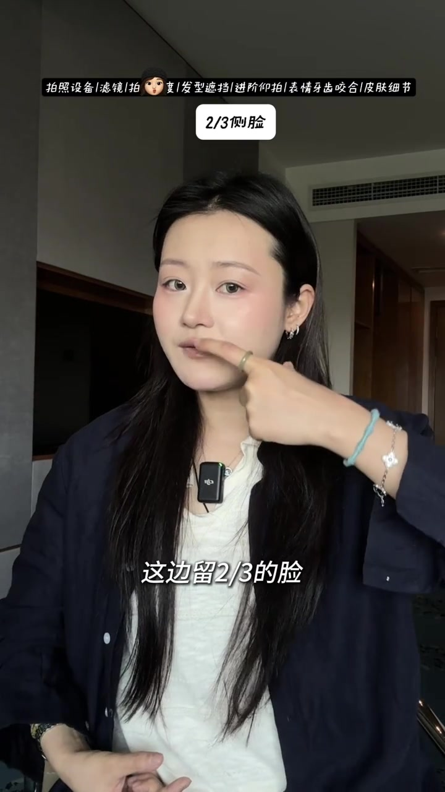
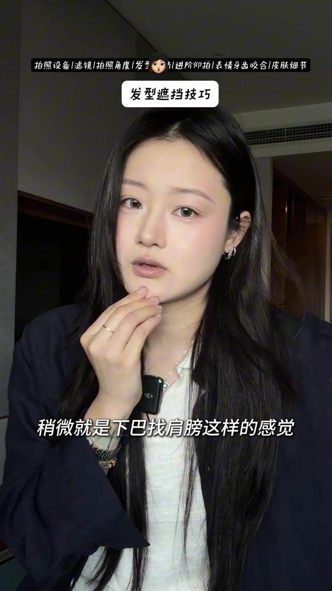
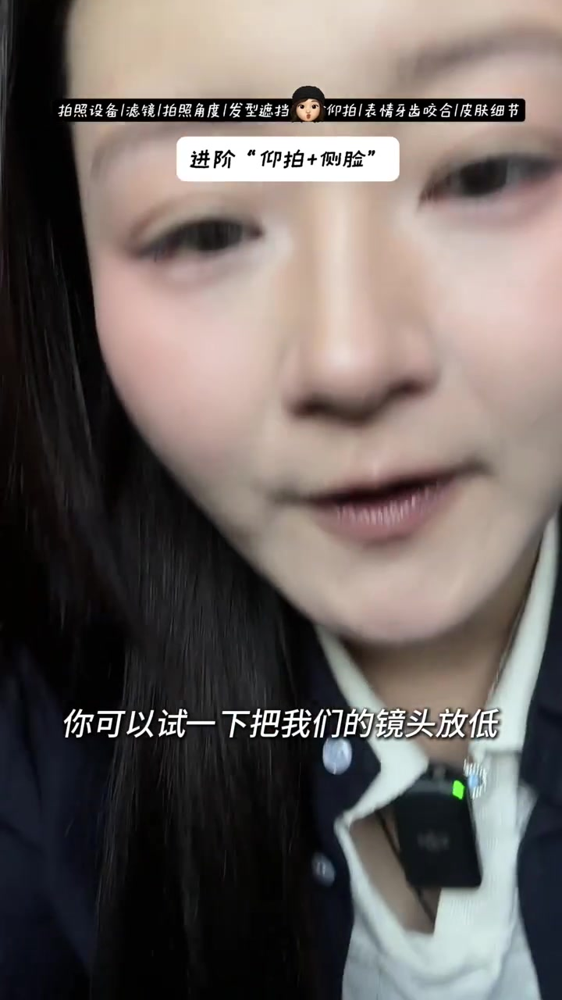
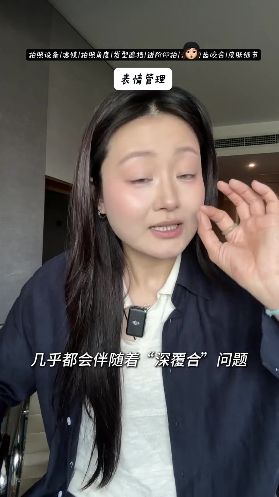

开场：方圆脸拍照没有那么难
UP 主对着镜头直接破题：方圆脸拍照并不像大家想的那么难，关键是找到好看的角度。她说自己想发的那些照片常被夸“惊艳”，于是今天毫无保留、也不夹带广告，把技巧一次讲完。顶部导航栏已经把整条视频的章节排好：拍照设备、滤镜、拍照角度、发型遮挡、进阶仰拍、表情牙齿咬合、皮肤细节。
画面字幕大意：「真的没有你们想的那么难」；口播：「只需要找到好看的角度。」
说明：Whisper 把「方圆脸」听成「方运蓝」，把「只需要」听成「一直需要」。下文以可见字幕与界面为准；末尾转录区仍保留原始分段。

拍照设备：16 Pro Max，工具是自拍杆
设备段落很干脆：手机是 iPhone 16 Pro Max，画面还叠了一句「苹果系列都可」。真正被当作工具强调的是自拍杆——可伸到约 1 米 7，往底下一敲就弹开，按钮与手机蓝牙连接，方便对镜自拍时远距离按快门。
画面字幕：「首先拍照的设备我用的 16 Pro Max」

后置显宽、前置显小：出片秘诀先选自拍
她点出方圆脸拍照的通病：后置拍侧脸/后侧这块会显得极其宽、极其大；一旦换成前置，脸就小了很多。因此她的出片秘诀就是自拍。若觉得照片「没有分离感」，也不急着上美颜，先从滤镜入手。
画面字幕：「那就是我们的后置」→「是不是感觉脸就小了很多」
Whisper 将「通病」识为「通静」、「出片秘诀」识为「出变幣」。对照字幕与前后对比画面校正。

滤镜：Dazz 相机里的富士，不美颜不花钱
滤镜段落弹出 Dazz 相机图标。她用的是 dazz 里的富士滤镜：不需要美颜、不需要花钱；拍的时候先试几张，调一下亮度即可。滤镜负责氛围与「分离感」，脸型问题留给后面的角度章解决。
画面字幕：「我用的 “dazz” 里的富士滤镜」
Whisper 将「dazz」听成「带姿」、「美颜」听成「汇颜」、「先测试」听成「签测试」。

角度核心：正脸显宽平，就拍 2/3 侧脸
角度是整条视频的标题答案。她建议先照镜子观察：若正脸觉得宽平，就拍三分之二侧脸——一边留约三分之一，一边留三分之二。侧一点之后，颌线立刻更清楚，「一下子就有骨相了」，脸也显得更瘦。不好看的那一侧，留到下一章用发型挡。
画面字幕：「这边留 2/3 的脸」；口播大意：「而且我们的脸一下子就有骨相了。」
Whisper 把「显宽平」听成「是否变平/贬评」，「侧」听成「测」，「骨相」听成「骨像」。以「2/3 侧脸」标签与字幕为准。

发型遮挡 + 下巴找肩膀，把颧骨线条顺下去
找到 2/3 侧脸后，她补两招：一是用发型遮挡不好看的一侧，以及偏高的颧骨区域，让轮廓「流畅」；二是「下巴找肩膀」——下巴微微靠向肩膀那一侧，脸型会比正面对镜平拍小一大截。反面不好看的脸，就交给头发去挡。
画面字幕：「稍微就是下巴找肩膀这样的感觉」

进阶仰拍：镜头放低再抬起，舌头抵上颚
想拍得更特别，她示范进阶「仰拍 + 侧脸」：先把镜头放低，再把镜头抬起来——乍看吓人没关系，这一侧脸反而更好看。朝向好看的一侧时，用舌头抵住上颚，双下巴就不容易露出来；此时不要看镜头，尽量把脸往上看，让最好看的方向变成优点。她总结：越不常规的视角，照片往往越特别。
画面标签：「进阶 “仰拍+侧脸”」；字幕：「你可以试一下把我们的镜头放低」
Whisper 将「上颚」识为「上额」、「脸」识为「连」、「方圆脸」识为「方向盒」。

表情管理：方圆脸常伴深覆合，牙关不要咬紧
进入表情章，她点出一个常被忽略的点：很多方圆脸几乎都会伴随着「深覆合」问题。拍照时无论张嘴还是闭嘴，都不要把牙关咬紧——牙齿放松，下半张脸更松、更短一点，笑起来也更好看。
画面字幕：「几乎都会伴随着“深覆合”问题」
Whisper 将「深覆合」听成「身复合」，「咬紧」听成「摇紧」。以画面字幕为准。

皮肤细节：找阳光、点「五花肉」高光，美图提亮不磨皮
最后解决妆感与清晰度。第一点是一定要找到阳光——她用的这枚滤镜非常挑光线，有阳光时特别好看。同时在脸上用一颗很水、很细的「五花肉」质感高光，点在颧骨往内收的区域、鼻头、山根、鼻侧边，以及眼皮、下巴，再在鼻背下方点一点点，用来塑造「伪造的骨骼光感」；有光时皮肤会透出来。
修图她一般用美图秀秀：不去开磨皮；若瑕疵多，会去用「皮肤细节」拖高遮瑕力，同时保留妆感；瑕疵不多就不动遮瑕，反而加深清晰与肌理。接着用「眼部精修 → 亮眼」，把五官和刚画的高光点一起提亮，画面会更清楚。课程到此结束。
口播大意：「我不会去用它的磨皮……把那个清晰和肌理加深……用眼部精修亮眼。」
Whisper 将「滤镜」听成「绿镜」、「颧骨」听成「全股」、「美图秀秀」听成「美头锈说」、「磨皮」听成「抹皮」。叙述依据可见字幕与修图界面校正。